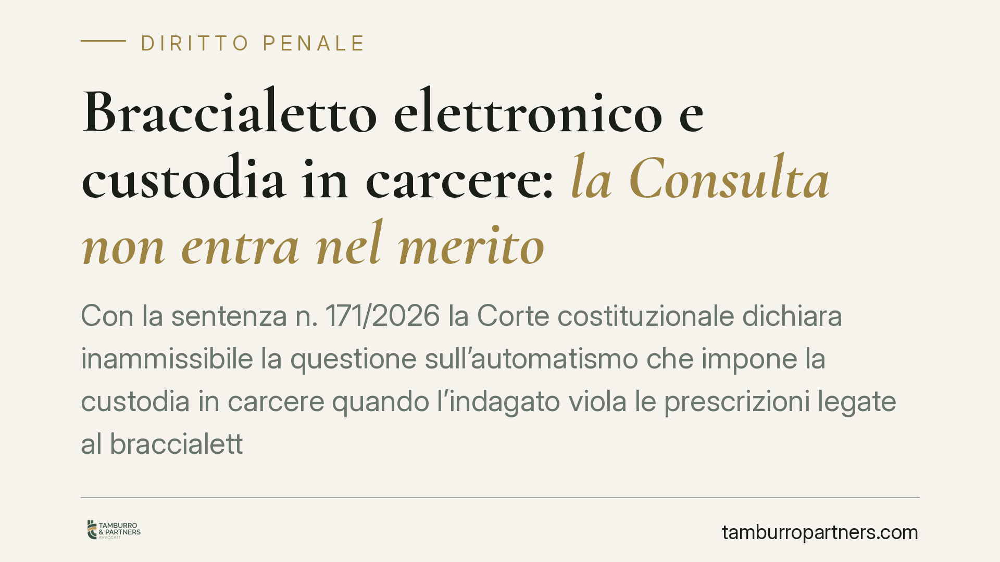

Braccialetto elettronico e custodia in carcere: la Consulta non entra nel merito
Con la sentenza n. 171/2026 la Corte costituzionale dichiara inammissibile la questione sull'automatismo che impone la custodia in carcere quando l'indagato viola le prescrizioni legate al braccialetto elettronico (art. 276, comma 1-ter, c.p.p.). La norma resta in vigore. La decisione, però, offre spunti sulla distinzione tra violazione addebitabile e mero malfunzionamento tecnico, decisiva nella prassi difensiva.

Il caso
La questione nasce dalla posizione di un indagato sottoposto a misura cautelare con controllo tramite braccialetto elettronico. A fronte di anomalie nel dispositivo, il Tribunale di Avellino aveva disposto l'aggravamento verso la custodia in carcere. Il Tribunale di Napoli, sezione riesame, ha sollevato la questione di legittimità costituzionale dell'art. 276, comma 1-ter, c.p.p., ritenendo troppo rigido l'automatismo che collega la trasgressione all'ingresso in carcere.
La Corte costituzionale, con la sentenza n. 171/2026, non è entrata nel merito: ha dichiarato la questione inammissibile.
Inquadramento normativo
L'art. 276, comma 1-ter, c.p.p. disciplina le conseguenze della trasgressione alle prescrizioni degli arresti domiciliari quando la misura è assistita da mezzi elettronici di controllo (il cosiddetto braccialetto). La disposizione prevede, in presenza di trasgressione, la sostituzione della misura con la custodia cautelare in carcere.
Il punto controverso è la rigidità di questo meccanismo: la norma, nella sua formulazione, non contiene una clausola testuale che escluda l'aggravamento per le violazioni di lieve entità. L'eventuale valorizzazione della gravità concreta della condotta deriva dall'interpretazione giurisprudenziale, non da un'eccezione scritta nella disposizione. È un dato importante, perché incide sul margine di manovra del giudice e, di riflesso, sulla strategia difensiva.
È utile ricordare cosa significa una declaratoria di inammissibilità. A differenza di una pronuncia che accoglie la questione (dichiarando illegittima la norma, in tutto o in parte, anche con interventi additivi o manipolativi), l'inammissibilità non produce alcun effetto sul testo: la norma resta esattamente com'era. La Corte, cioè, non si pronuncia sul contenuto del dubbio di costituzionalità, ma rileva un ostacolo processuale che le impedisce di decidere nel merito. L'automatismo, dunque, continua a operare.
Implicazioni pratiche
Per chi è sottoposto a misura con braccialetto elettronico, la decisione conferma un quadro severo: la trasgressione delle prescrizioni può condurre alla custodia in carcere.
La partita, però, si gioca su un piano diverso dalla legittimità astratta della norma. Il nodo è la qualificazione del fatto: una cosa è la violazione cosciente e addebitabile all'interessato (l'allontanamento volontario, la manomissione, lo spegnimento del dispositivo), altra cosa è l'anomalia tecnica non imputabile (perdita di segnale, batteria difettosa, malfunzionamento dell'apparato o della rete).
Nel primo caso l'aggravamento trova fondamento nella condotta. Nel secondo manca proprio il presupposto: non c'è una trasgressione riferibile alla volontà dell'indagato, ma un problema del mezzo di controllo. Dimostrare che l'anomalia non dipende da una condotta è, nella pratica, l'obiettivo difensivo centrale.
Qui diventa decisiva la prova tecnica. I log e i report della centrale operativa che gestisce il monitoraggio registrano gli eventi: perdita di segnale, allarmi, orari, posizioni. L'acquisizione e l'analisi di questi dati consentono di ricostruire se vi sia stata una condotta rilevante o un semplice disservizio tecnico. Senza questa documentazione, la difesa procede al buio.
Sul piano processuale, il provvedimento di aggravamento è impugnabile. Contro l'ordinanza che dispone o sostituisce la misura è esperibile l'appello cautelare ex art. 310 c.p.p. entro dieci giorni dalla notificazione o dalla comunicazione; resta inoltre, nei casi previsti, lo strumento del riesame. I termini sono brevi e perentori: perderli significa consolidare la misura più afflittiva.
Cosa fare in concreto
- Verificate subito la natura della violazione contestata. Distinguete tra allontanamento o manomissione volontaria e malfunzionamento del dispositivo.
- Richiedete i log e i report della centrale operativa. Sono la prova principale per dimostrare che l'anomalia non è addebitabile all'interessato.
- Documentate ogni segnalazione tecnica. Conservate comunicazioni, orari e riscontri su batteria, segnale o malfunzionamenti del braccialetto.
- Impugnate nei termini. Valutate l'appello cautelare ex art. 310 c.p.p. entro dieci giorni; non lasciate decorrere il termine.
- Attivatevi tempestivamente. La rapidità nella raccolta dei dati tecnici è spesso decisiva, perché alcuni registri hanno tempi di conservazione limitati.
In sintesi
La sentenza n. 171/2026 non modifica la norma: l'automatismo dell'art. 276, comma 1-ter, c.p.p. resta in vigore. La difesa si sposta sul terreno della prova, dove la distinzione tra condotta addebitabile e anomalia tecnica, supportata dai dati della centrale operativa, può fare la differenza.
---
Contributo informativo a cura di Tamburro & Partners Avvocati - Avv. Giuseppe Tamburro. Non costituisce parere legale.
Ogni condominio ha una storia a sé.
Se gestisci un'amministrazione e vuoi un confronto su una specifica questione condominiale, scrivi allo studio. Ti rispondiamo entro un giorno lavorativo.